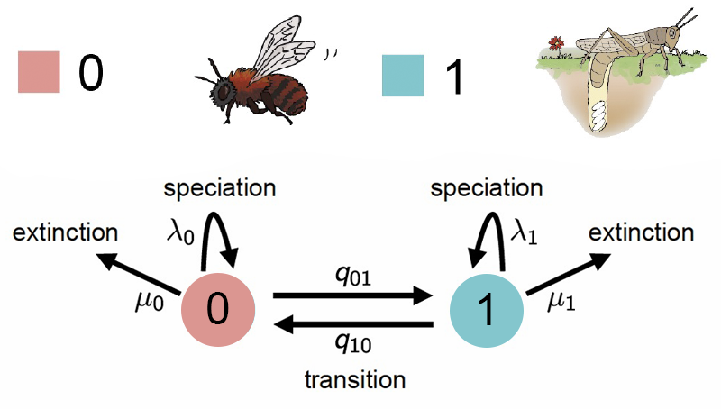

Introducción a modelos State Speciaction-Extinción (SSE)
Presentación: Introducción a modelos State Speciaction-Extinción (SSE)
Haz clic en la imagen para ver el PDF de la presentación
Analizaremos si las tasas de diversificación están asociadas al tipo de hospedero en los escarabajos meloidos (Meloidae). Las subfamilias Nemognathinae y Meloinae presentan un ciclo de vida complejo, caracterizado por múltiples metamorfosis y estrategias de parasitoidismo. La mayoría de los géneros y tribus dentro de estas subfamilias son parasitoides de abejas, incluyendo especies foréticas y no foréticas. Sin embargo, dos tribus han adoptado una estrategia distinta, alimentándose de huevos de saltamontes. Estas diferencias en las estrategias de vida están asociadas con marcadas variaciones en la riqueza de especies entre clados (López-Estrada et al., 2019).
Modelo BiSSE (Binary state speciation and extinction, Madisson et al. 2007)
BiSSE el modelo de especiación y extinción dependendiente de un caracter binario y es un proceso estocástico que se forma de la composición de dos procesos de nacimiento y muerte. Los dos procesos se conectan a través de dos tasas de cambio conocidas como las tasas de transición. El supuesto más importante del modelo BiSSE es que cada estado tiene su propia tasa de especiación \(\lambda\) y su propia tasa de extinción \(\mu\) que representan el momento en el cuál un linaje se divide en dos o se extingue. Este es un supuesto muy importante porque la implicación es que la acumulación (o la falta de acumulación) de linajes es el resultado del valor del estado. Pueden encontrar mas información en el material del taller Filo-Bayes - BISSE.
Escarabajos meloidos

Las transiciones entre estados ocurren a tasas \(q_{01}\) (de abeja a saltamontes) y \(q_{10}\) (de saltamontes a abeja). Cada estado tiene su propia tasa de especiación (\(\lambda_0, \lambda_1\)) y extinción (\(\mu_0, \mu_1\)).
Matriz de tasas de transición (\(Q\))
La matriz de transición \(Q\) define la probabilidad de cambio entre estados en un tiempo infinitesimal:
\[ Q = \begin{bmatrix} -q_{01} & q_{01} \\ q_{10} & -q_{10} \end{bmatrix} \]
Donde:
\(q_{01}\): es la tasa de transición de hospedero abeja a hospedero saltamontes.
\(q_{10}\): es la tasa de transición de hospedero saltamontes a hospedero abeja.
La diagonal contiene los valores negativos de las tasas de salida de cada estado (\(-q_{01}\) y \(-q_{10}\)), de modo que cada fila suma cero.
Parámetros en el modelo BiSSE
El modelo incluye seis parámetros fundamentales:
\(\lambda_0\): tasa de especiación en el estado 0 (hospedero abeja)
\(\lambda_1\): tasa de especiación en el estado 1 (hospedero saltamontes)
\(\mu_0\): tasa de extinción en el estado 0
\(\mu_1\): tasa de extinción en el estado 1
\(q_{01}\): tasa de cambio de hospedero abeja a hospedero saltamontes
\(q_{10}\): tasa de cambio de hospedero saltamontes a hospedero abeja
Descarga del Árbol Filogenético y la matriz codificada
📥 Puedes descargar el archivo .tre con el árbol en el siguiente enlace:
📥 Descargar Árbol Filogenético
📥 Puedes descargar el archivo .nex con la matriz codificada en el siguiente enlace:
Guarda los archivos en la carpeta correspondiente y verifica su ubicación antes de continuar.
Carga de la filogenia y los datos
# Leer el arbol
T <- readTrees("../data/bisse_hisse/ConLyttini.tre")[1]
# Leer la matriz de caracteres
datos <- readCharacterData("../data/bisse_hisse/Traits_conLyttini_01.nex")Define el número de estados en los modelos BiSS
NUM_STATES = 2Definir vectores para almacenar los movimientos de MCMC y los monitores de resultados.
moves = VectorMoves()
monitors = VectorMonitors()Valores de la log-normal
De acuerdo con Nee et al. (1994) el número esperado de linajes en la corona de un clado con n taxones bajo un proceso de nacimiento y muerte en el tiempo t es:
\((\lambda - \mu) = \frac{In(n)/2}{t}\)
En donde: n = es el número de especies y t = es la edad de la filogenia
# Definimos una a priori log normal
rate_mean <- ln(ln(3000.0/2.0) / T.rootAge())
# Con una varianza que es amplia
rate_sd <- 0.587405
for (i in 1:NUM_STATES) {
# lognormales de las especiaciones
log_speciation[i] ~ dnNormal(mean=rate_mean, sd=rate_sd)
speciation[i] := exp(log_speciation[i])
moves.append(mvSlide(log_speciation[i], delta=0.20, tune=true, weight=3.0))
# lognormales de las extinciones
log_extinction[i] ~ dnNormal(mean=rate_mean, sd=rate_sd)
extinction[i] := exp(log_extinction[i])
moves.append(mvSlide(log_extinction[i], delta=0.20, tune=true, weight=3.0))
}Definir la matriz de tasas de transición entre los estados del carácter
# Calcula la suma de todas las longitudes de las ramas del árbol filogenético
# Dividido por 10: Esto asume que en promedio ocurren 10 cambios de estado a lo largo del árbol
rate_pr := T.treeLength() / 10Definición de las tasas de transición
# Tasa de transición de estado 1 → estado 2
rate_12 ~ dnExp(rate_pr)
# Tasa de transición de estado 2 → estado 1
rate_21 ~ dnExp(rate_pr)
# Definición de movimientos
moves.append(mvScale(rate_12, weight=2))
moves.append(mvScale(rate_21, weight=2))¿Por qué usar una exponencial?
La distribución exponencial es adecuada para modelar tasas de transición porque impone la condición de que siempre sean positivas.
También asigna mayor probabilidad a valores pequeños, lo que significa que los cambios de estado no ocurren demasiado rápido.
Creación de la matriz de tasas de transición
rate_matrix := fnFreeBinary([rate_12, rate_21 ], rescaled=false)Frecuencias del estado en la raíz
rate_category_prior ~ dnDirichlet(rep(1,NUM_STATES))
moves.append(mvDirichletSimplex(rate_category_prior, tune=true, weight=2))Fijar la edad de la raíz
root <- T.rootAge()Definir \(\rho\) : Proporción de especies muestreadas
rho <- T.ntips()/3000Construcción del árbol evolutivo generado a partir de un proceso de nacimiento y muerte dependiente del carácter
timetree ~ dnCDBDP( rootAge = root,
speciationRates = speciation,
extinctionRates = extinction,
Q = rate_matrix,
pi = rate_category_prior,
delta = 1.0,
rho = rho,
condition = "time")🔹 Parámetros del proceso de nacimiento y muerte (dnCDBDP):
rootAge = root→ Se fija la edad de la raíz usandoroot = T.rootAge().speciationRates = speciation→ Se usa la tasa de especiación (λ).extinctionRates = extinction→ Se usa la tasa de extinción (μ).Q = rate_matrix→ Usa la matriz de tasas de transición de caracteres (rate_12,rate_21).pi = rate_category_prior→ Usa la distribución a priori de los estados en la raíz.delta = 1.0→ Parámetro de ajuste para la distribución de tiempos de especiación/extinción.rho = rho→ Probabilidad de muestreo de especies (rho = T.ntips()/3000).condition = "time"→ Condiciona el proceso a un tiempo de raíz fijo.
Fijar (clamp) los datos observados
timetree.clamp(T)
timetree.clampCharData(datos)Creación del modelo
### workspace model wrapper ###
mymodel = model(rate_matrix)Configuración de los monitores
Los monitores guardan los resultados en archivos o los imprimen en pantalla.
monitors.append(mnModel(filename="../output/mitos_BiSSE_clyttini.log", printgen=1))
monitors.append(mnJointConditionalAncestralState(tree=timetree, cdbdp=timetree, type="Standard", printgen=1, withTips=true, withStartStates=false, filename="../output/anc_states_MITOS_BiSSE_clyttini.log"))
monitors.append(mnStochasticCharacterMap(cdbdp=timetree, printgen=10, filename="../output/SCHM_BiSSE_clyttini.log"))
monitors.append(mnScreen(printgen=10, rate_12, rate_21, speciation, extinction))